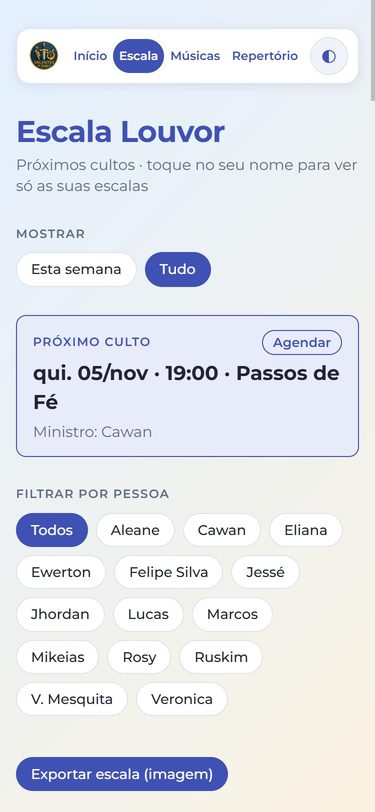
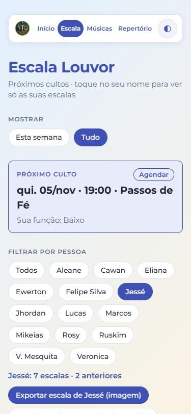
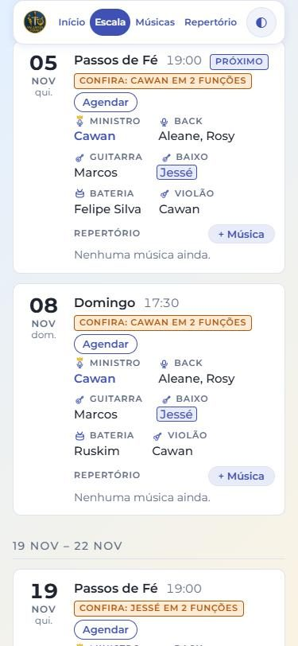
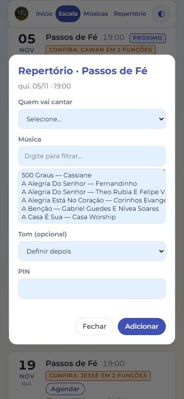
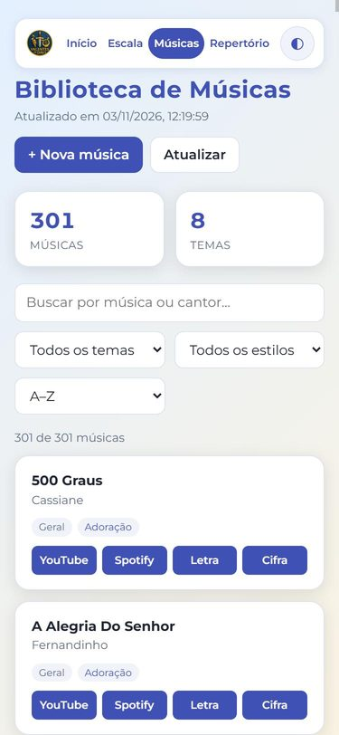

Como usar o site
Passo a passo rápido, com as telas do celular. Toque em cada item para abrir.
1Instalar o app no celular
Instale o site como um aplicativo: ele ganha um ícone na tela inicial e abre em tela cheia.
- Android (Chrome ou Edge): toque em Instalar app na tela inicial. Se o botão não aparecer, abra o menu do navegador (⋮) e escolha Instalar app ou Adicionar à tela inicial.
- iPhone (Safari): toque em Compartilhar e depois em Adicionar à Tela de Início.
Sem internet? O app guarda a última escala e a lista de músicas que você abriu. Mesmo sem sinal você consegue ver a escala.
O botão ◐ no canto troca entre o tema claro e o escuro.
2Ver a escala
Toque em Link da Escala. A tela mostra os próximos cultos, por semana.
- Esta semana mostra só a semana atual. Tudo mostra todos os cultos futuros.
- O quadro Próximo culto traz a data, o horário e o ministro. O botão Agendar coloca o culto no calendário do celular.
- Semanas que já passaram e dias sem ninguém escalado não aparecem.
- A escala é atualizada sozinha sempre que a planilha muda.

3Ver só a sua escala
Em Filtrar por pessoa, toque no seu nome. A lista passa a mostrar só os seus cultos, e o quadro do próximo culto mostra a sua função.
- Aparecem só os nomes de quem está na escala.
- As escalas que já passaram ficam apagadas, só para consulta.
- Exportar escala (imagem) gera uma imagem com as escalas futuras para você salvar ou mandar no grupo. Com seu nome escolhido, a imagem traz só as suas escalas. Com Todos, traz a escala completa.
- Agendar todas as escalas coloca todos os seus cultos futuros no calendário de uma vez.

4Entender o cartão de cada culto
Cada culto mostra a data, o horário, o nome do culto e a equipe completa, cada função com seu ícone:
- Ministro (microfone com coroa), Back, Teclado, Guitarra, Baixo, Bateria, Violão e Sax.
- Quando você está filtrando uma pessoa, o nome dela fica destacado.
- O aviso laranja Confira aparece quando a mesma pessoa está em mais de uma função no culto.
- A marca Próximo indica o culto mais perto de hoje.

5Montar o repertório do culto
No cartão do culto, toque em + Música.
- Escolha quem vai cantar (o ministro do culto).
- Digite para filtrar e escolha a música na lista.
- Escolha o tom. Se ainda não souber, deixe em Definir depois.
- Digite o PIN do ministério e toque em Adicionar. Quem não tem o PIN pode ver o repertório, mas não consegue adicionar músicas.
Na aba Repertório do menu você vê o repertório de cada culto e o histórico, agrupado pelo nome do ministro.

6Biblioteca de Músicas
Toque em Biblioteca de Músicas (ou em Músicas no menu do alto). É o acervo do ministério.
- Buscar por nome da música ou do cantor.
- Filtrar por tema e por estilo, e ordenar a lista.
- Cada música tem os botões YouTube, Spotify, Letra e Cifra (quando cadastrados).
- + Nova música cadastra uma música que ainda não está na lista.

7Lista de músicas do Passos de Fé
Na tela inicial, o botão laranja Lista música Passos de Fé abre a lista do culto de quinta, na ordem de ensaio.
- Cada música tem os atalhos de YouTube, Spotify, letra e cifra.
- Playlist no YouTube Music abre a playlist completa.
- Todas do tema na Biblioteca leva à Biblioteca já filtrada em Passos de Fé.